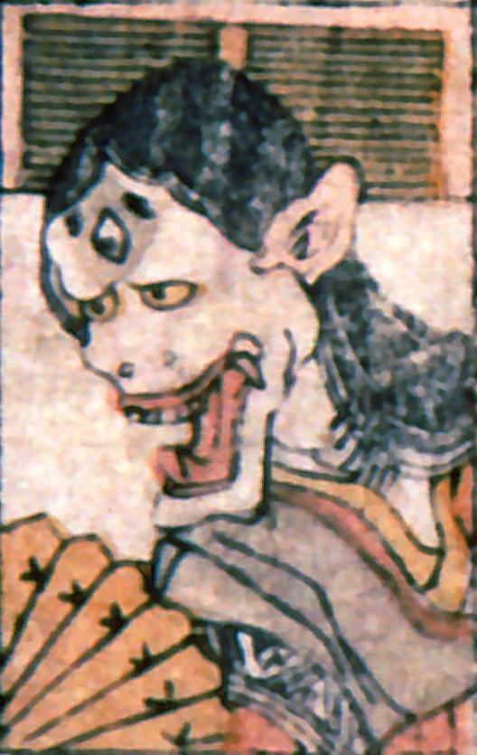

三つ目の般若。耳が鋭く尖っている。十二単を着て、扇を持っている。大きく裂けた口からは、牙が突き出している。
著作者：叢豊丸／出典：親書誌：A5_pushkin_0018：新板化物尽；シンバンバケモノツクシ／日付：2011／資源識別子：A5_pushkin_0018_0014_0000
Copyright (c)2010- International Research Center for Japanese Studies, Kyoto, Japan. All rights reserved.